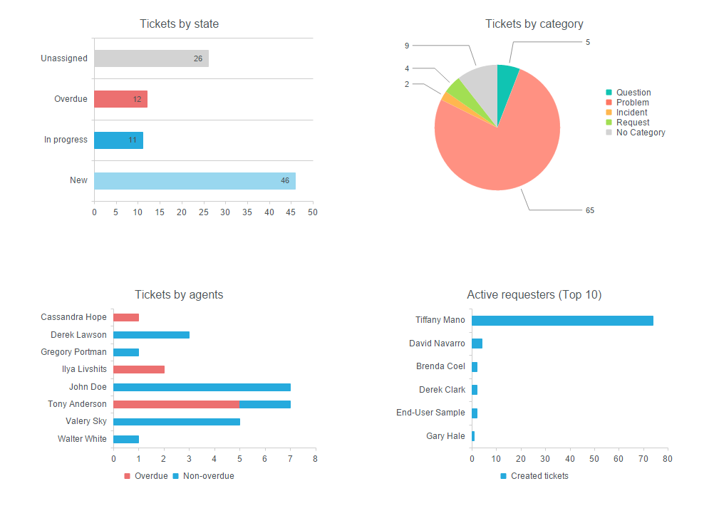
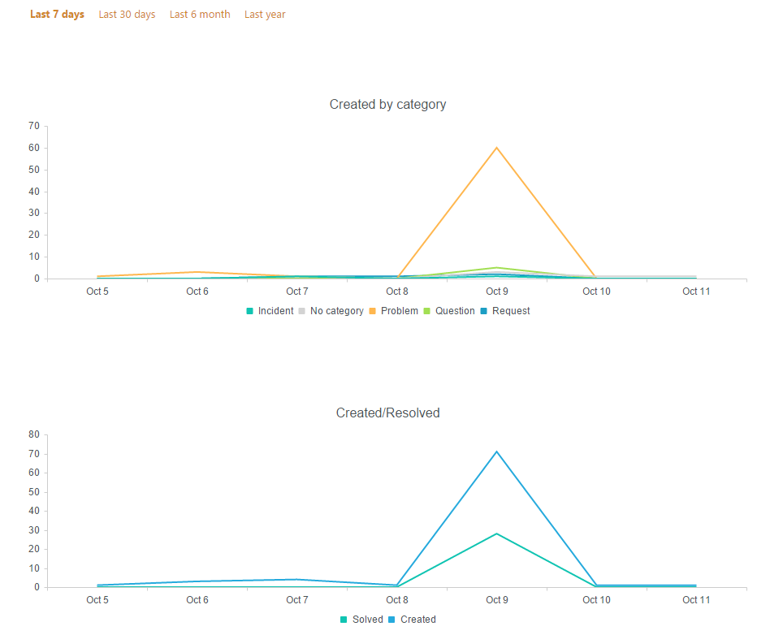
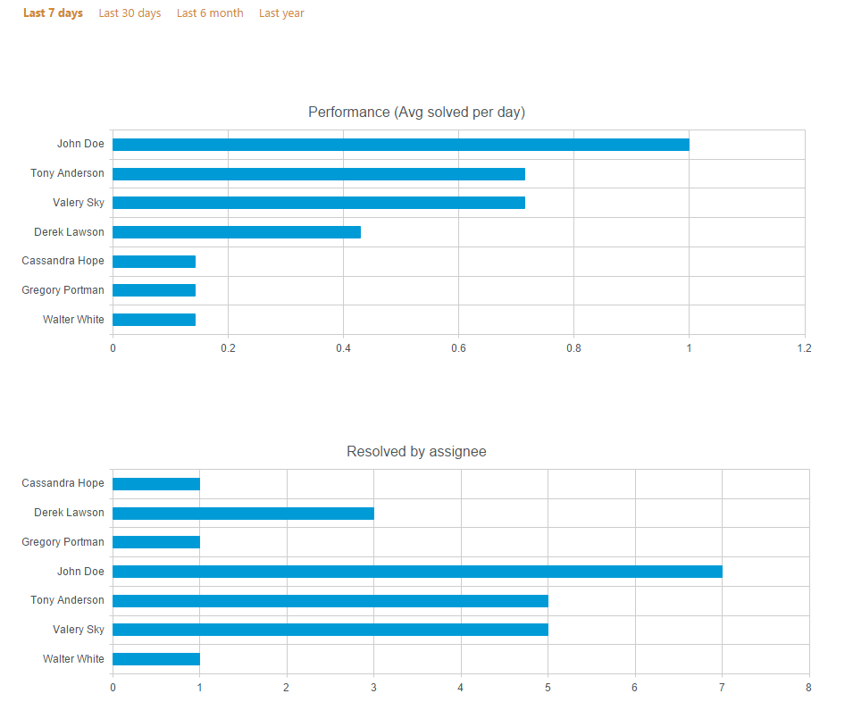
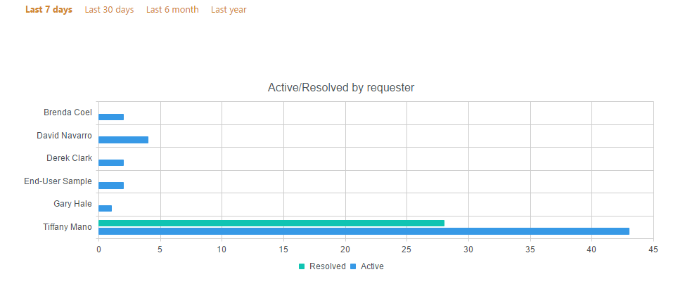

Reports¶
In this section, you are able to create diagrams based on all tickets, requesters, and agents. Here you can analyze efficiency and intensity of HelpDesk usage, personal productivity of each agent, find most active requesters and do other kinds of information analysis with your HelpDesk data.
Go to Reports by clicking the appropriate button in the navbar:
On all pages (except “Overview”) you can apply quick date filters to only show data in the last: 7 days, 30 days, 6 months, year.
You can modify charts using Dashboard Designer. It is another Plumsail product with a separate pricing.
Overview¶
It is a dashboard representing all HelpDesk tickets. The dashboard consists of four charts:
- Tickets by state
- Shows how many unassigned, overdue, in progress and new tickets are created.
- Tickets by category
- Shows how many tickets are created within a specific category (Ticket field “Category”).
- Tickets by agents
- Shows how many overdue and non-overdue tickets each agent has (Ticket field “Due date”).
- Active requesters (Top 10)
- Shows top 10 requesters by a number of tickets created.

By date¶
Here you can see two timelines. The vertical axis represents an amount of tickets, the horizontal axis represents a date of ticket creation.
- Created by category
- Shows the amount of tickets created within a specific category and a specified interval (Ticket field “Category”).
- Created/Resolved
- Shows the amount of tickets created and the amount of tickets resolved within specified interval.

By assignee¶
Next charts represent information related to assignee:
- Performance (Avg solved per day)
- Shows average resolved tickets per day within specified interval.
- Resolved by assignee
- Shows the amount of tickets resolved by assignee within specified interval.

By requester¶
This chart which shows how many active tickets and tickets resolved by requester exist within specified interval. An active ticket is a ticket with one of the following statuses: “In progress” or “New”. You can see how many tickets are unresolved yet (Active) and how many tickets are resolved by the requester (Resolved).
